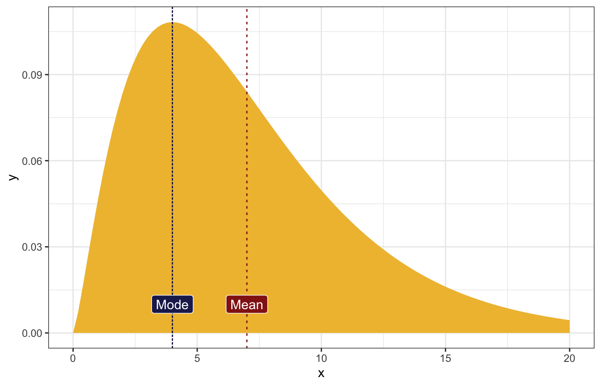
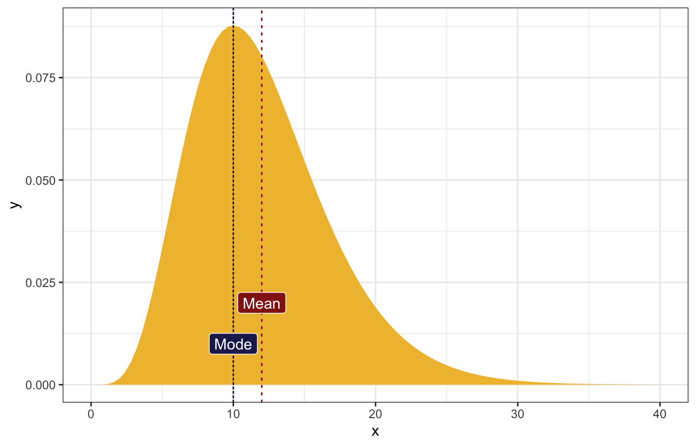
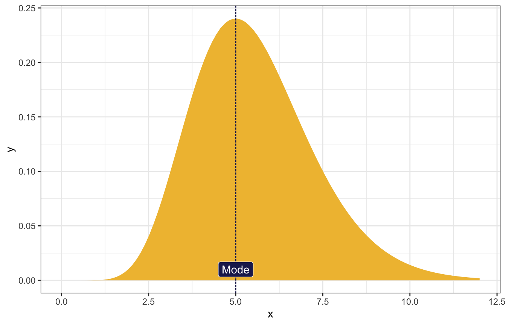
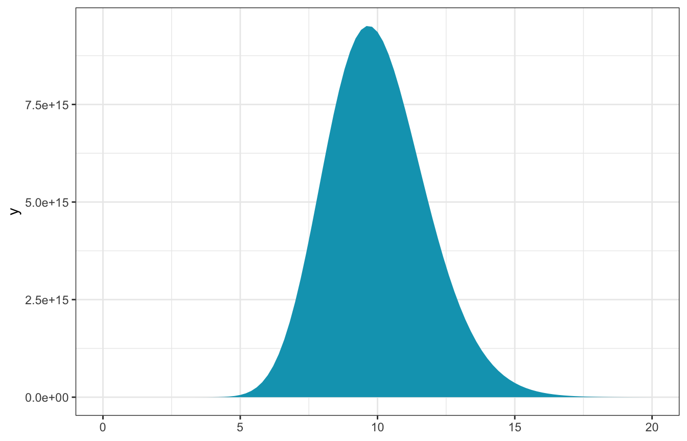
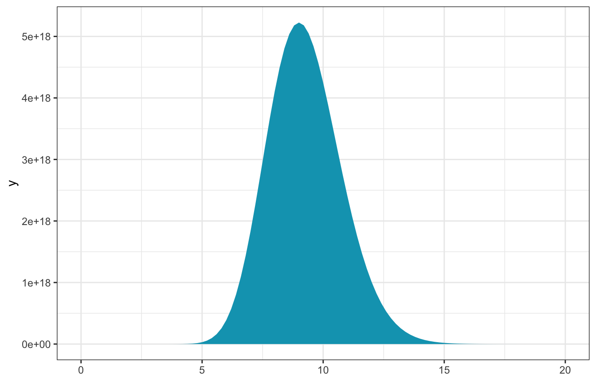
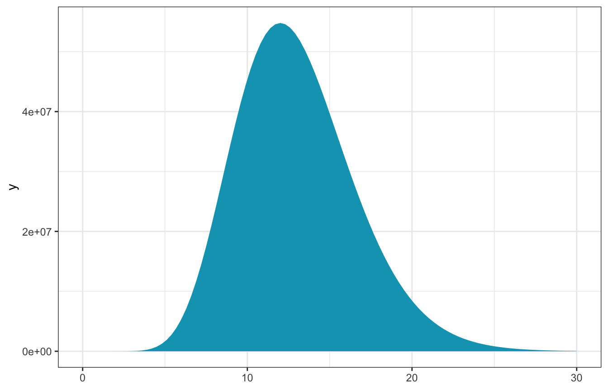
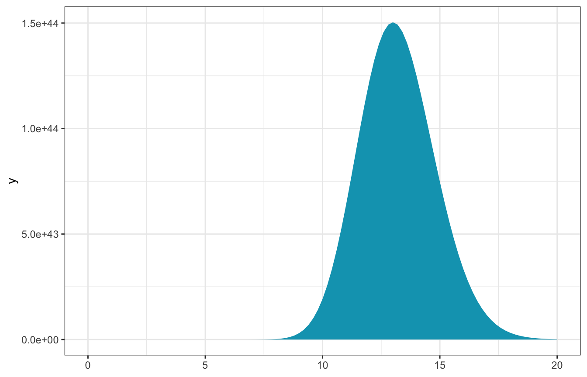
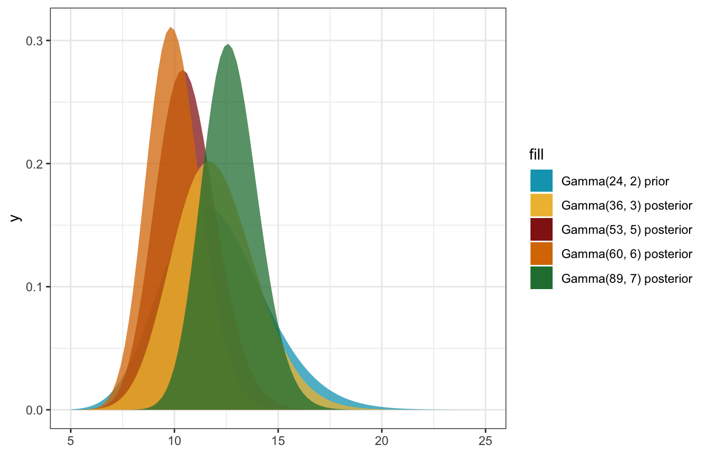

library(bayesrules)
library(tidyverse)
library(brms)
library(tidybayes)
# Plot stuff
clrs <- MetBrewer::met.brewer("Lakota", 6)
theme_set(theme_bw())
# Seed stuff
set.seed(1234)
BAYES_SEED <- 1234Exercises
Conjugate families
Practice: Gamma-Poisson
5.1: Tuning a Gamma prior
\[ \begin{aligned} E(\lambda) &= \frac{s}{r} \\ \operatorname{Mode}(\lambda) &= \frac{s - 1}{r} \\ \operatorname{Var}(\lambda) &= \frac{s}{r^2} \end{aligned} \]
The most common value of λ is 4, and the mean is 7.
\[ \begin{cases} \frac{s}{r} = 7 & [\text{Mean}] \\ \frac{s-1}{r} = 4 & [\text{Mode}] \\ \end{cases} \]
Solving the system of equations gives:
\[ \begin{aligned} r &= \frac{1}{3} \\ s &= \frac{7}{3} \end{aligned} \]
Or with code:
eq_mean <- function(r) 7 * r
eq_mode <- function(r) (4 * r) + 1
r <- uniroot(function(x) eq_mean(x) - eq_mode(x), c(0, 100))$root
s <- eq_mean(r)
r; s
## [1] 0.3333333
## [1] 2.333333ggplot() +
stat_function(fun = ~dgamma(., shape = 7/3, rate = 1/3), geom = "area",
fill = clrs[2]) +
geom_vline(xintercept = 4, linetype = "21", color = clrs[6]) +
annotate(geom = "label", x = 4, y = 0.01, label = "Mode",
fill = clrs[6], color = "white") +
geom_vline(xintercept = 7, linetype = "23", color = clrs[3]) +
annotate(geom = "label", x = 7, y = 0.01, label = "Mean",
fill = clrs[3], color = "white") +
xlim(c(0, 20))
The most common value of λ is 10 and the mean is 12.
\[ \begin{cases} \frac{s}{r} = 12 & [\text{Mean}] \\ \frac{s-1}{r} = 10 & [\text{Mode}] \\ \end{cases} \]
Solving the system of equations gives:
\[ \begin{aligned} r &= \frac{1}{2} \\ s &= 6 \end{aligned} \]
Or with code:
eq_mean <- function(r) 12 * r
eq_mode <- function(r) (10 * r) + 1
r <- uniroot(function(x) eq_mean(x) - eq_mode(x), c(0, 100))$root
s <- eq_mean(r)
r; s
## [1] 0.5
## [1] 6ggplot() +
stat_function(fun = ~dgamma(., shape = 6, rate = 0.5), geom = "area",
fill = clrs[2]) +
geom_vline(xintercept = 10, linetype = "21", color = clrs[6]) +
annotate(geom = "label", x = 10, y = 0.01, label = "Mode",
fill = clrs[6], color = "white") +
geom_vline(xintercept = 12, linetype = "23", color = clrs[3]) +
annotate(geom = "label", x = 12, y = 0.02, label = "Mean",
fill = clrs[3], color = "white") +
xlim(c(0, 40))
The most common value of λ is 5, and the variance is 3.
\[ \begin{cases} \frac{s-1}{r} = 5 & [\text{Mode}] \\ \frac{s}{r^2} = 3 & [\text{Variance}] \\ \end{cases} \]
Solving the system of equations gives:
\[ \begin{aligned} r &= \frac{5 \pm \sqrt{37}}{6} \\ s &= \frac{31 \pm 5\sqrt{37}}{6} \end{aligned} \]
lol k
r <- (5 + sqrt(37)) / 6
s <- (31 + 5*sqrt(37)) / 6
r; s
## [1] 1.847127
## [1] 10.23564Yep, it works:
table(round(rgamma(10000, shape = s, rate = r)))
##
## 1 2 3 4 5 6 7 8 9 10 11 12 13
## 2 149 845 1871 2427 2108 1338 692 355 143 42 22 6
var(rgamma(10000, shape = s, rate = r))
## [1] 3.013767ggplot() +
stat_function(fun = ~dgamma(., shape = s, rate = r), geom = "area",
fill = clrs[2]) +
geom_vline(xintercept = 5, linetype = "21", color = clrs[6]) +
annotate(geom = "label", x = 5, y = 0.01, label = "Mode",
fill = clrs[6], color = "white") +
xlim(c(0, 12))
And so on… I get the point :)
5.2: Poisson likelihood functions
From equation 5.6 in Bayes Rules:
\[ L(\lambda \mid \vec{y}) ~ \propto ~ \lambda^{\sum y_i}e^{-n\lambda} \]
In code:
L <- function(lambda, sum_y, n) lambda^sum_y * exp(-n * lambda)(3, 7, 19)
observed_data <- c(3, 7, 19)
n <- length(observed_data)
sum_y <- sum(observed_data)- \(n\) = 3
- \(\sum y_i\) = 29
\[ L(\lambda \mid \vec{y}) ~ \propto ~ \lambda^{29} e^{-3\lambda} \]
ggplot() +
stat_function(fun = ~L(., sum_y, n), geom = "area", fill = clrs[1]) +
xlim(c(0, 20))
(12, 12, 12, 0)
observed_data <- c(12, 12, 12, 0)
n <- length(observed_data)
sum_y <- sum(observed_data)- \(n\) = 4
- \(\sum y_i\) = 36
\[ L(\lambda \mid \vec{y}) ~ \propto ~ \lambda^{36} e^{-4\lambda} \]
ggplot() +
stat_function(fun = ~L(., sum_y, n), geom = "area", fill = clrs[1]) +
xlim(c(0, 20))
(12)
observed_data <- c(12)
n <- length(observed_data)
sum_y <- sum(observed_data)- \(n\) = 1
- \(\sum y_i\) = 12
\[ L(\lambda \mid \vec{y}) ~ \propto ~ \lambda^{12} e^{-\lambda} \]
ggplot() +
stat_function(fun = ~L(., sum_y, n), geom = "area", fill = clrs[1]) +
xlim(c(0, 30))
(16, 10, 17, 11, 11)
observed_data <- c(16, 10, 17, 11, 11)
n <- length(observed_data)
sum_y <- sum(observed_data)- \(n\) = 5
- \(\sum y_i\) = 65
\[ L(\lambda \mid \vec{y}) ~ \propto ~ \lambda^{65} e^{-5\lambda} \]
ggplot() +
stat_function(fun = ~L(., sum_y, n), geom = "area", fill = clrs[1]) +
xlim(c(0, 20))
5.3: Gamma-Poisson posteriors
Prior:
\[ \lambda \sim \operatorname{Gamma}(24, 2) \]
Model:
\[ \begin{aligned} Y_i \mid \lambda &\stackrel{\text{ind}}{\sim} \operatorname{Poisson}(\lambda) \\ \lambda &\sim \operatorname{Gamma}(s, r) \end{aligned} \]
Conjugate posterior:
\[ \lambda \mid y \sim \operatorname{Gamma}(s + \sum y_i,\quad r + n) \]
(3, 7, 19)
observed_data <- c(3, 7, 19)- \(n\) = 3
- \(\sum y_i\) = 29
\[ \begin{aligned} \lambda \mid y &\sim \operatorname{Gamma}(s + \sum y_i,\quad r + n) \\ \lambda \mid (3, 7, 19) &\sim \operatorname{Gamma}(24 + 29,\quad 2 + 3) \\ &\sim \operatorname{Gamma}(53, 5) \end{aligned} \]
\[ \begin{aligned} E(\lambda) &= \frac{24}{2} = 12 \text{ from prior} \\ E[\lambda \mid (3, 7, 19)] &= \frac{53}{5} = 10.6 \text{ from posterior} \end{aligned} \]
(12, 12, 12, 0)
observed_data <- c(12, 12, 12, 0)- \(n\) = 4
- \(\sum y_i\) = 36
\[ \begin{aligned} \lambda \mid y &\sim \operatorname{Gamma}(s + \sum y_i,\quad r + n) \\ \lambda \mid (12, 12, 12, 0) &\sim \operatorname{Gamma}(24 + 36,\quad 2 + 4) \\ &\sim \operatorname{Gamma}(60, 6) \end{aligned} \]
\[ \begin{aligned} E(\lambda) &= \frac{24}{2} = 12 \text{ from prior} \\ E[\lambda \mid (12, 12, 12, 0)] &= \frac{60}{6} = 10 \text{ from posterior} \end{aligned} \]
(12)
observed_data <- c(12)- \(n\) = 1
- \(\sum y_i\) = 12
\[ \begin{aligned} \lambda \mid y &\sim \operatorname{Gamma}(s + \sum y_i,\quad r + n) \\ \lambda \mid (12) &\sim \operatorname{Gamma}(24 + 12,\quad 2 + 1) \\ &\sim \operatorname{Gamma}(36, 3) \end{aligned} \]
\[ \begin{aligned} E(\lambda) &= \frac{24}{2} = 12 \text{ from prior} \\ E[\lambda \mid (12)] &= \frac{36}{3} = 12 \text{ from posterior} \end{aligned} \]
(16, 10, 17, 11, 11)
observed_data <- c(16, 10, 17, 11, 11)- \(n\) = 5
- \(\sum y_i\) = 65
\[ \begin{aligned} \lambda \mid y &\sim \operatorname{Gamma}(s + \sum y_i,\quad r + n) \\ \lambda \mid (16, 10, 17, 11, 11) &\sim \operatorname{Gamma}(24 + 65,\quad 2 + 5) \\ &\sim \operatorname{Gamma}(89, 7) \end{aligned} \]
\[ \begin{aligned} E(\lambda) &= \frac{24}{2} = 12 \text{ from prior} \\ E[\lambda \mid (16, 10, 17, 11, 11)] &= \frac{89}{7} = 12.714 \text{ from posterior} \end{aligned} \]
ggplot() +
stat_function(fun = ~dgamma(., shape = 24, rate = 2),
geom = "area", aes(fill = "Gamma(24, 2) prior"), alpha = 0.75) +
stat_function(fun = ~dgamma(., shape = 53, rate = 5),
geom = "area", aes(fill = "Gamma(53, 5) posterior"), alpha = 0.75) +
stat_function(fun = ~dgamma(., shape = 60, rate = 6),
geom = "area", aes(fill = "Gamma(60, 6) posterior"), alpha = 0.75) +
stat_function(fun = ~dgamma(., shape = 36, rate = 3),
geom = "area", aes(fill = "Gamma(36, 3) posterior"), alpha = 0.75) +
stat_function(fun = ~dgamma(., shape = 89, rate = 7),
geom = "area", aes(fill = "Gamma(89, 7) posterior"), alpha = 0.75) +
xlim(c(5, 25)) +
scale_fill_manual(values = clrs[1:5])